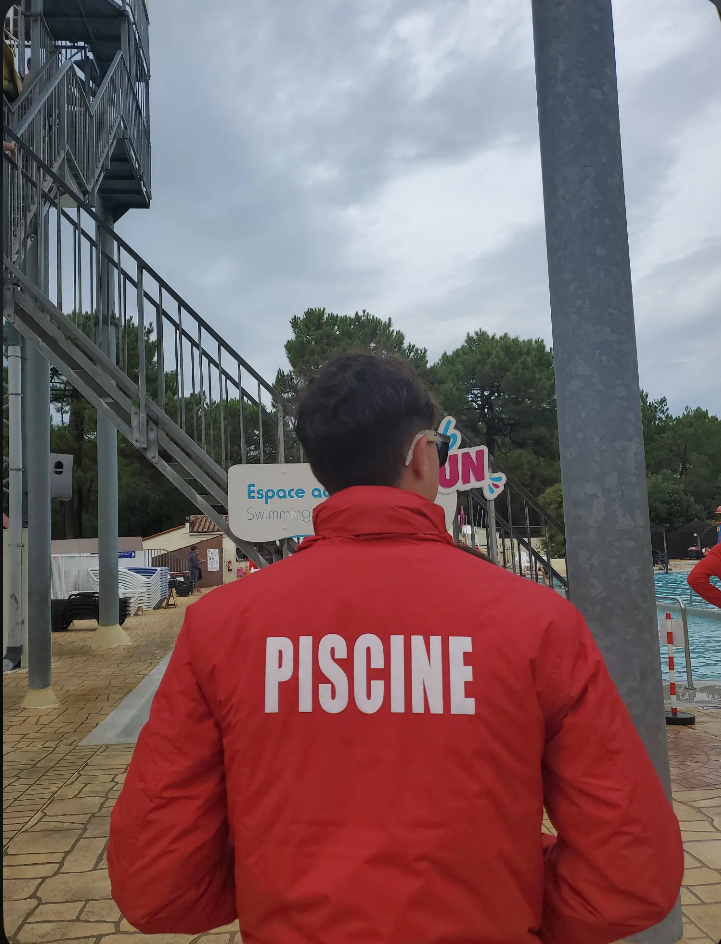

About Me
Here is a bit more information about my background and skills
I am a second-year student in Data Science at the University of Poitiers, Niort campus. My education has allowed me to develop solid skills in analysis, visualization, modeling, and programming. I specialize in Python, R, SQL, Power BI, and VBA.
I have had the opportunity to apply these skills in various student projects, both in groups and independently. My internship in a company allowed me to face real-world challenges with tangible results. This experience also taught me to be rigorous and autonomous in a professional setting.
I place great importance on communication and teamwork. I am an approachable, open person who is attentive to group dynamics. This allows me to collaborate easily, regardless of context or audience.
I have a genuine culture of feedback: I actively seek returns to improve my work. Whether from a professional or an outside eye, every opinion helps me progress. I always try to have a critical and constructive perspective on my own work.
Finally, I am driven by strong curiosity and a constant desire to learn. The rapid evolution of the data field encourages me to continuously train myself. I aim to become a comprehensive professional capable of transforming data into decision levers.
Technical Skills
Data Visualization
- Power BI
- Tableau
- Python
- R / RStudio
Development
- SQL / MySQL
- SAS
- HTML / CSS / JS / PHP
- VBA
- Talend
Transversal Skills
- Clustering Methods
- Time Series Analysis
- Agile Methods
Outside of Studies
Outside of my studies, I work as a lifeguard. I obtained my BNSSA in 2023, which allowed me to perform numerous replacements at the X Eau aquatic center in Cognac. I also worked two seasons at Siblu Bonne Anse Plage camping in La Palmyre during the summers of 2023 and 2024. These experiences allowed me to develop a real sense of responsibility, rigor, and good adaptability.

I have been passionate about sports throughout my life. I have practiced basketball throughout my life, a sport that taught me teamwork and perseverance. I also enjoy swimming and running: any opportunity to exert myself or face a challenge is a source of motivation for me.
Music holds a central place in my life. Far beyond a passion, I have played drums my whole life. It has become a real tool in my daily routine. It helps me concentrate, stay focused, relax, or get motivated, depending on the moment. Whatever the style: jazz, rock, classical, rap, or even simple background music in an office; as long as it's there, it helps me find my rhythm. Without music, working becomes difficult for me. Conversely, any stray noise above the music can easily break my concentration. It's a fragile balance, but fundamental in my daily life.